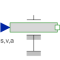

MoveForced movement of a flange according to a position, velocity and acceleration signal |

|
Information
This information is part of the Modelica Standard Library maintained by the Modelica Association.
Flange flange_b is forced to move relative to the support connector with a predefined motion according to the input signals:
u[1]: position of flange
u[2]: velocity of flange
u[3]: acceleration of flange
The user has to guarantee that the input signals are consistent to each other, i.e., that u[2] is the derivative of u[1] and that u[3] is the derivative of u. There are, however, also applications where by purpose these conditions do not hold. For example, if only the position dependent terms of a mechanical system shall be calculated, one may provide position = position(t) and set the velocity and the acceleration to zero.
The input signals can be provided from one of the signal generator blocks of the block library Modelica.Blocks.Sources.
Parameters (1)
| useSupport |
Value: false Type: Boolean Description: = true, if support flange enabled, otherwise implicitly grounded |
|---|
Connectors (3)
| flange |
Type: Flange_b Description: Flange of component |
|
|---|---|---|
| support |
Type: Support Description: Support/housing of component |
|
| u |
Type: RealInput[3] Description: Position, velocity and acceleration of flange as input signals |